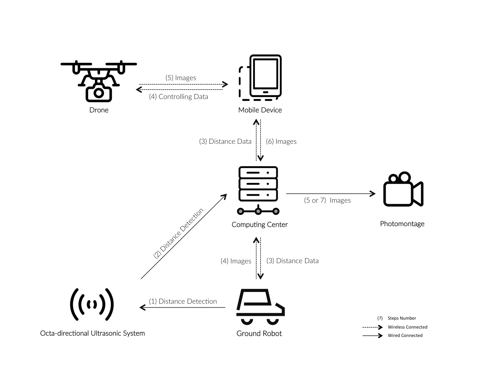
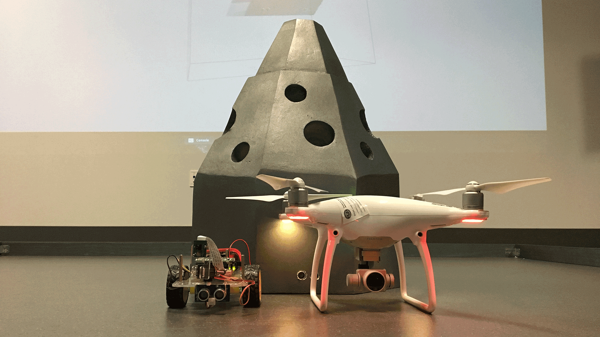
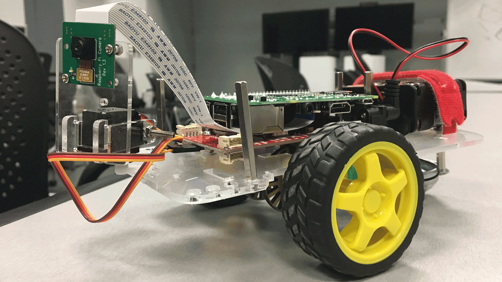

inspection
creating an interactive environment for autonomous robots to explore their surroundings using cameras
To advance my design studies, I developed my skills in labs and classes at the Media Arts and Technology (MAT) program at my college, UC Santa Barbara. Usually restricted to graduate students, I was able to gain valuable insight from dedicated PhD candidates
and UCSB MAT department chair George Legrady.
Our team behind the project focused on creating a system of autonomous, communicating robots equipped with cameras and using their pictures to display them in a thought-provoking presentation. In particular, we wanted to highlight the interactions possible between different robots and the autonomous quality of the system that required no human guidance.
Ground robots move around the environment while taking pictures. They are tracked by an ultrasonic sensor system feeding data to a flying drone which responds to their relative positions, re-positioning itself while also taking pictures. Finally, the server takes all the robots’ pictures and compiles them into a presentation.
Our team behind the project focused on creating a system of autonomous, communicating robots equipped with cameras and using their pictures to display them in a thought-provoking presentation. In particular, we wanted to highlight the interactions possible between different robots and the autonomous quality of the system that required no human guidance.
Ground robots move around the environment while taking pictures. They are tracked by an ultrasonic sensor system feeding data to a flying drone which responds to their relative positions, re-positioning itself while also taking pictures. Finally, the server takes all the robots’ pictures and compiles them into a presentation.
process
My purpose was to ensure that the team had a responsive localization system. This entailed providing a constant, accurate stream of information about the relative distances of the ground robots.
Arduino was the best platform for this project, considering I had to constantly send commands to multiple sensors and relay all the information back to a server, while connecting naturally with Processing. For example, I could read the data that came from the sensors through the server’s Serial port. From this, I could write additional commands through Processing to generate a constantly updating stream of files which contained the latest location data while only keeping a limited cache of files stored on the server at any moment. The main challenge was coordinating our efforts between the different teams – making sure data types from one source could be read by the other teams and checking that all the individual pieces were connected and communicating with the server. This required considering another team member’s limitations and adjusting our own parts to accommodate for these limitations. We also faced issues with defining the exact mechanism and procedures of our project; we started the project with an admittedly vague goal of exploring an autonomous system of robots. A lot of effort actually went to solidifying our focus after our initial experiments.
These were other issues with transmission and programming, which were mainly resolved with tinkering with the Arduino IDE. Processing and Python proved particularly useful in establishing the pipeline to the drone. I faced one particular challenge when dealing with our ultrasonic sensors, as they were not as accurate as we had hoped. They returned errors when the distance of objects were too large and ended up slowing down the entire stream of information. To address this, I had to create a timeout system.

First, I wired and set up the sensor array comprised of eight individual ultrasonic sensors in a circular pattern based on the Arduino platform. Then, I programmed the microcontroller to control the sensors which emit and receive ultrasonic
signals. The microcontroller then records and translates that information into distances. That data would be rewritten through Processing to an object-oriented JSON format which the drone could parse, which is then transmitted to the server and
drone.

Once our individual parts were finished, we were able to solidify the essential links that unified our project – the server uploading the ultrasonic data, the drone and robots sending their photos to the server, and the Processing code
that compiled our pictures into a presentation.
Arduino was the best platform for this project, considering I had to constantly send commands to multiple sensors and relay all the information back to a server, while connecting naturally with Processing. For example, I could read the data that came from the sensors through the server’s Serial port. From this, I could write additional commands through Processing to generate a constantly updating stream of files which contained the latest location data while only keeping a limited cache of files stored on the server at any moment. The main challenge was coordinating our efforts between the different teams – making sure data types from one source could be read by the other teams and checking that all the individual pieces were connected and communicating with the server. This required considering another team member’s limitations and adjusting our own parts to accommodate for these limitations. We also faced issues with defining the exact mechanism and procedures of our project; we started the project with an admittedly vague goal of exploring an autonomous system of robots. A lot of effort actually went to solidifying our focus after our initial experiments.
These were other issues with transmission and programming, which were mainly resolved with tinkering with the Arduino IDE. Processing and Python proved particularly useful in establishing the pipeline to the drone. I faced one particular challenge when dealing with our ultrasonic sensors, as they were not as accurate as we had hoped. They returned errors when the distance of objects were too large and ended up slowing down the entire stream of information. To address this, I had to create a timeout system.

gallery